Measuring
Things to Remember
- Only measure groups that have all the heads, usually eight, for that particular Ames number.
- Ensure any comments made while measuring are consistent.
- Save the file after measuring all heads within an Ames number.
- Clean the pan after measuring each head.
- If any seed is spilled outside of the Delnet bag and into the pan pour it back after measuring.
- If a head contains seed that differs from the other heads in that Ames number, write a comment.
- If you are not sure about something, ask.
Tools Required
- Tin Pan
- Scissors
- Pruners
- Spatula
- Tape Measure 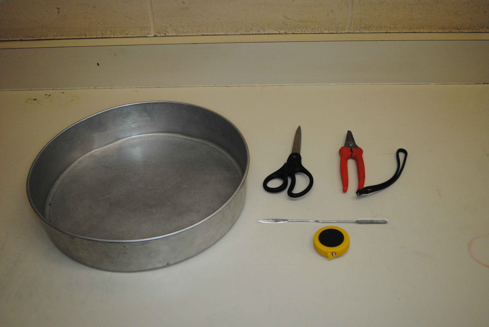
Getting Started
- Grab all required tools.
- Place the first group of heads, with the same Ames number, near you for measuring.
- Open the current years SAM Head Measurement excel file.
- If the file is not located here, ask a supervisor for the link.
- Locate the first empty cell in column A and select it. 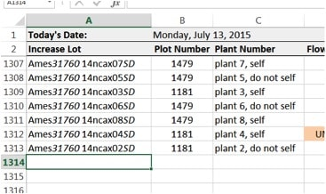
- Pull the harvest tag and head out of the mesh bag. 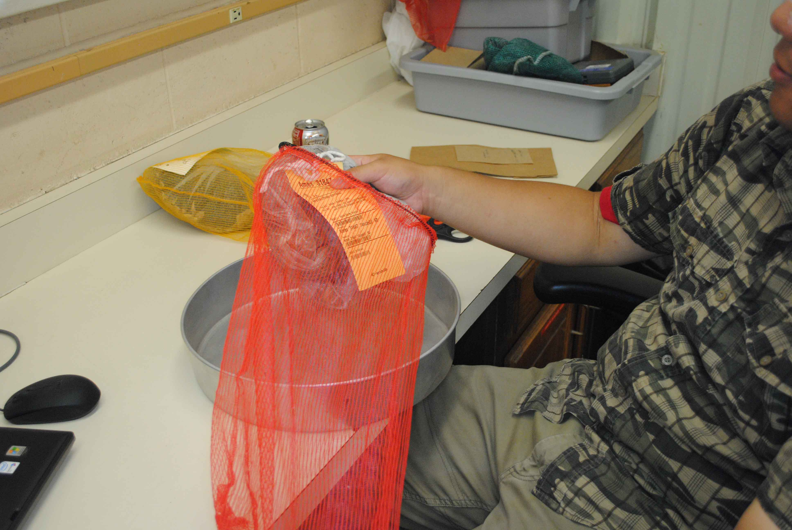
- Place the head in the pan.
- Cut the string off of the tag and throw the string away in the trash can, not the can designated for organic matter.
- String removal is another indicator that the head has been measured.
- Scan the three bar codes to enter the data into columns A, B, and C.
- If the bar code will not scan, copy the data from the cell above (Command-d) and adjust the information accordingly (Use F2 to enter a selected cell).
- Turn the tag over and enter the date in column D, Flowering Date.
- If there is no date listed, enter 'UNKNOWN'.
- Enter any comments, also on the back of the tag, in column E, Field Comments.
- Anything that was written on the tag, other than the date, goes here. Separate each item with a comma.
- If the only comment on the back is: =, +, or -, you must type an apostrophe first. This is done so as not to start an excel formula. Example: '=.
- In column F enter the date the head is measured. Usually the current date.
Measuring
- Open the Delnet bag containing the head.
- Keep the head over the open bag if possible.
- If the Delnet bag contains multiple heads see Appendix B.
- Using the pruners, remove the excess stem.
- Keep fingers away from the pruners to avoid injury.
- Turn the head over to inspect for patchy development, broken pieces, etc.
- For inspection and commenting, see Appendix A.
- Break off the sepals (Leaf structure on the outer edge). 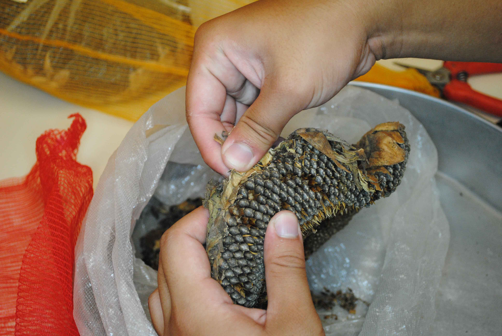
- Place the tape measure on one edge where the broken sepals meet the edge of the outer seeds.
- The first measurement must always be the diameter of the widest section of the head.
- Make certain the tape measure is on the centimeter side.
- Stretch the tape measure straight across the head.
- Keep the tape measure against the head to get a true measurement.
- Extend the tape measure to the point where the outer seeds meet the broken sepals. 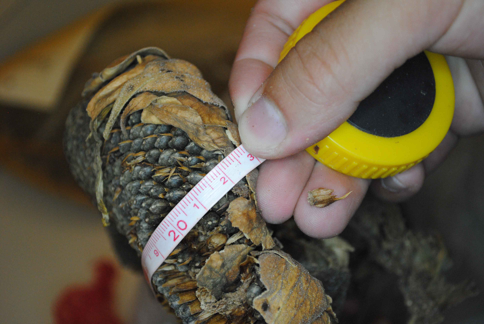
- Record the measurement in column G, EXT1.
- Round to the nearest helf centimeter.
- Without moving the head, take the tape and measure the diameter of the space not containing viable seed. 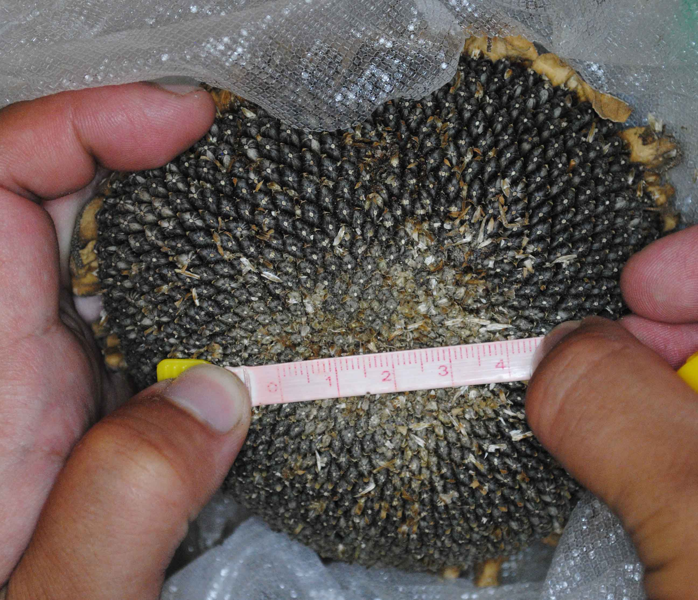
- Record the measurement in column H, INT1.
- If the head is full of seed all the to the center, record '0'.
- If the head is too patchy for an accurate measurement input '?' and comment accordingly in column K, Measuring Comments. See Appendix A for more details.
- Turn the head 90° and repeat steps 4 through 10 recording in columns I and J, respectively.
Finishing Up
- Place the head back into the Delnet bag.
- Using the same twist-tie, close the bag. 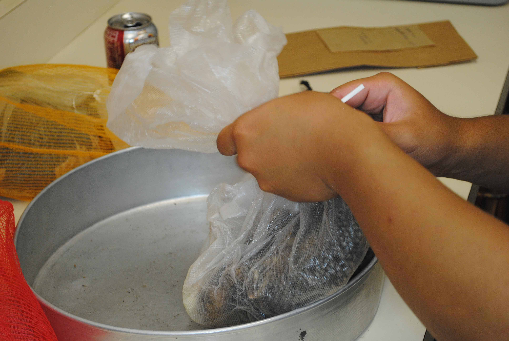
- Place the head back into the mesh bag.
- Place the tag back into the mesh bag. 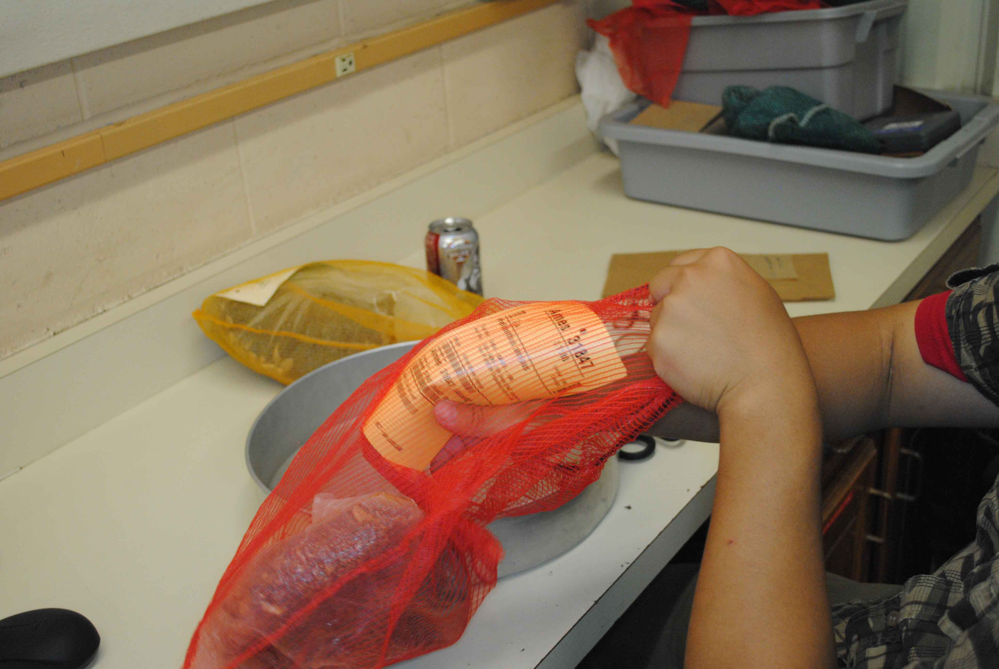
- Close the mesh bag.
- Place the finished head aside and continue with the remaining heads in the Ames number.
- Once all heads within the Ames number have been measured use an orange twist-tie to bundle them together on the hook. 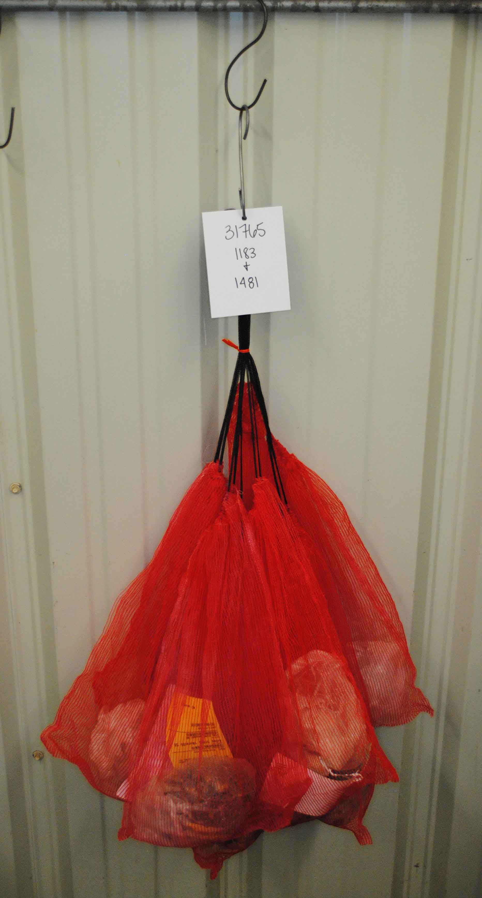
- Unless the heads will be threshed immediately, return the bundled heads to dry storage.
Appendix A - Inspection / Commenting
When inspecting heads, try to keep standards consistent. What is considered patchy one day should be considered patchy any other day. When unsure, ask. Below are two images depicting a completely full head as well as a head with a slightly patchy center.
{kind=link}
{kind=link}
Heads will range in the amount of seed they contain. Also, note that if a head is broken, insert '?' into the measurement columns (G - J) and comment that it is broken. If there are multiple heads mixed within the Delnet bag, measure the largest and make an appropriate comment.
The list below contains a few of the possible comments that can be made.
- Patchy Center
- Very Patchy
- Broken head, unable to measure.
- Very Little Seed
- Seeds have fallen off head. Unable to measure.
- Ringed
- All heads mixed, only large head measured.
- Hole in Head
Appendix B - Multiple Heads
Occasionally a Delnet bag will contain multiple heads. If all of the heads in the bag are mixed measure only the largest head while keeping the smaller heads inside the bag. Ensure a comment is made explaining what was done (See Appendix A). If the heads are separated, follow the steps below before moving on.
- Do not undo the twist tie separating the heads. 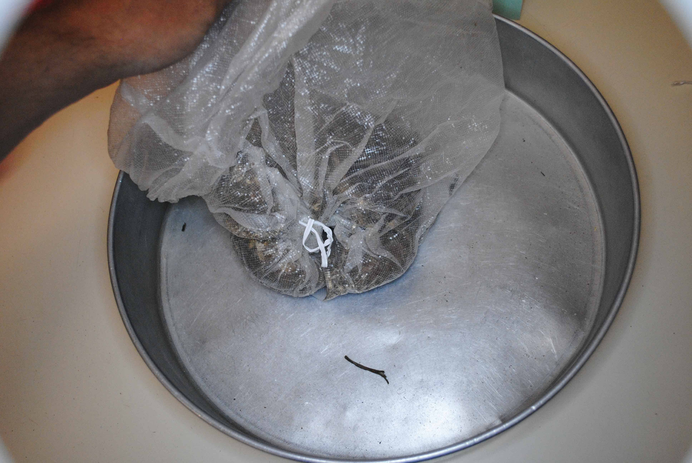
- Remove any excess stem from the heads. 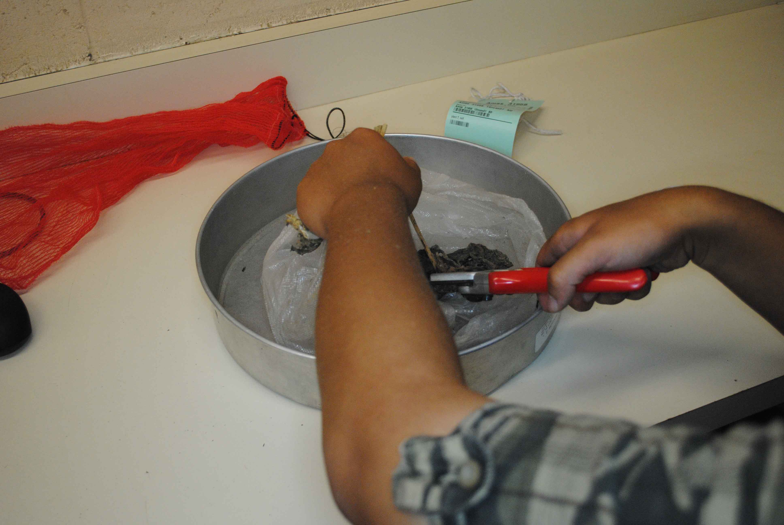
- Move all loose heads and debris into the opposite corner of the Delnet bag. 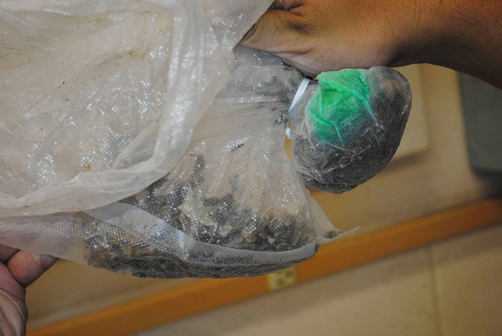
- Use another white twist tie to close that corner separating it from the rest of the bag. 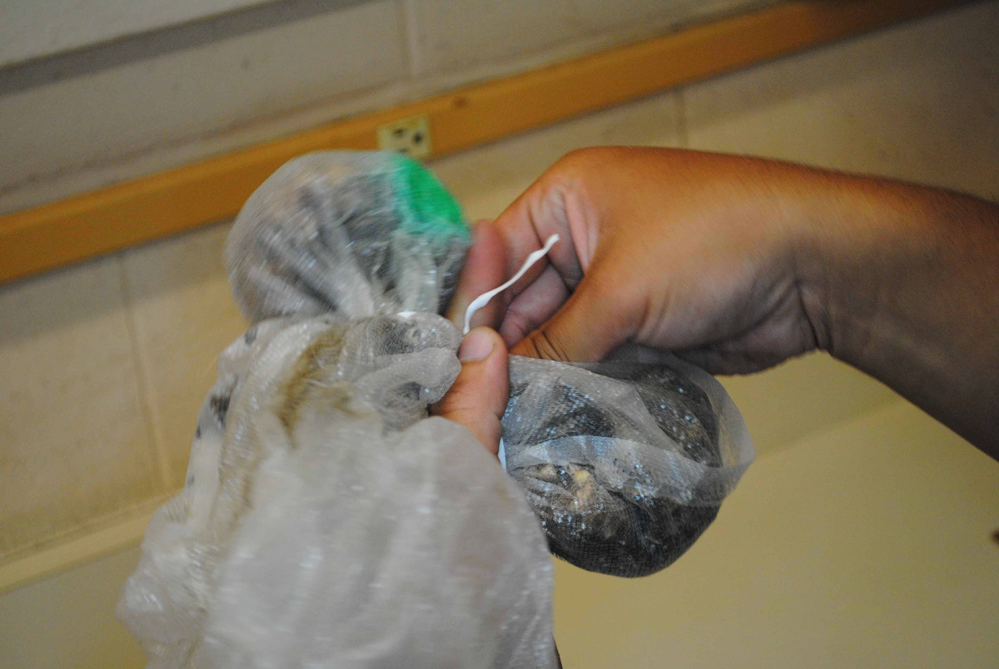
- Open the twist tie containing the single, larger head (this is the main head).
- Measure only the main head.
- Continue on with step 3 of Measuring.